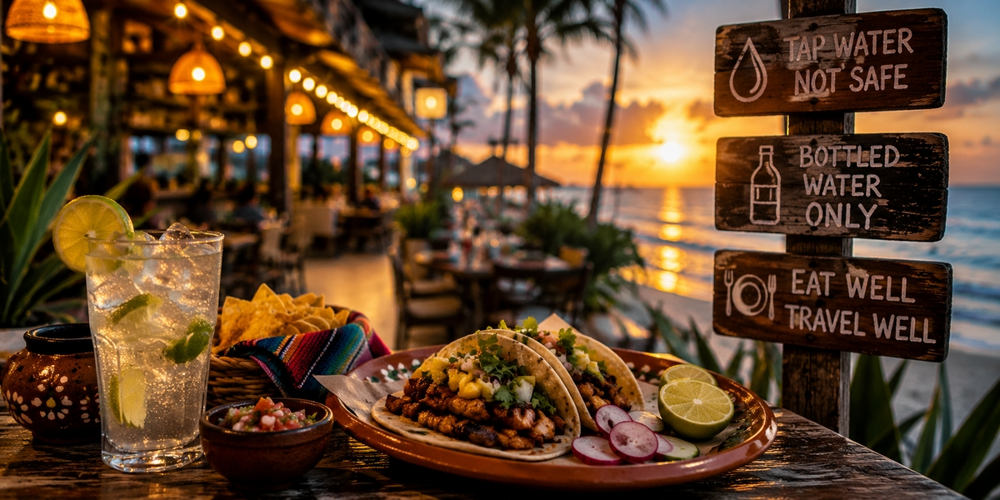
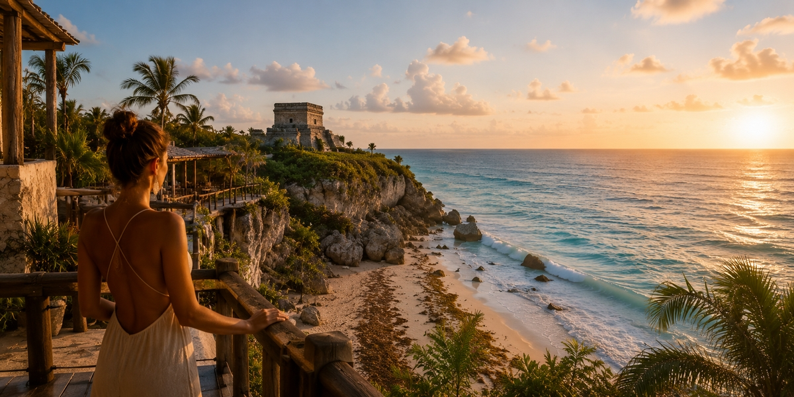
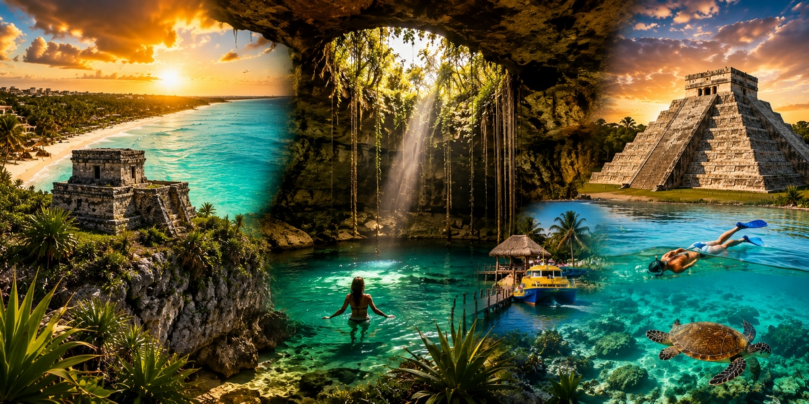
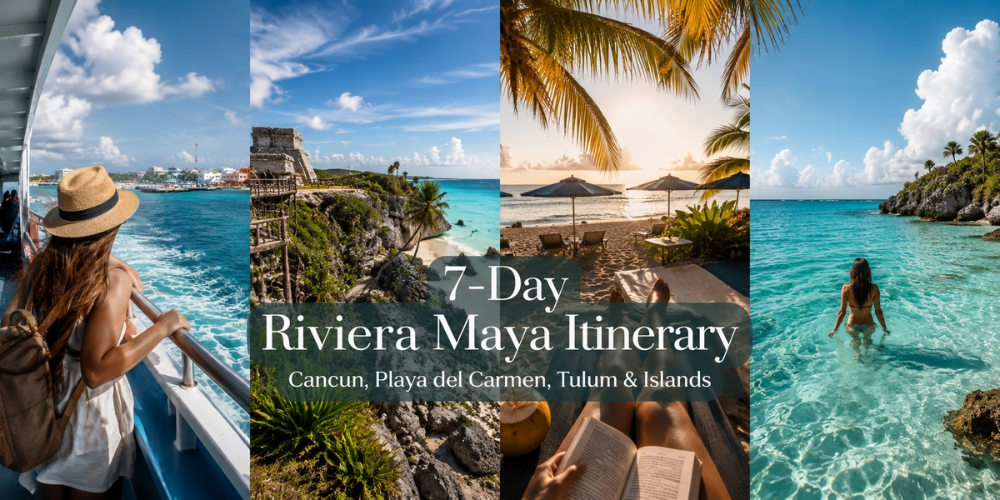

Їжа і вода в Мексиці: Канкун, Плая-дель-Кармен і Тулум
Чи можна пити воду? Чи безпечний лід? Чесний гід без паніки: вода з-під крана, вулична їжа, буфети в готелях і як не злапати розлад шлунка.

Найкращий час для поїздки в Тулум: погода, саргасум, ціни і стан пляжів
Сезони Тулума без прикрас: сухі та дощові місяці, реальність саргасуму 2026, коли злітають ціни і яке вікно справді пасує вашій поїздці.

Сезон саргасуму в Канкуні: чого чекати і як обрати пляж краще
Коли саргасум приходить у Канкун, які пляжі лишаються чистішими, як швидко змінюються умови і як знизити ризик правильними датами, узбережжям і вибором готелю.

Що робити в Канкуні та на Рив'єрі Майя: гід для першої поїздки
Головні враження за віддачею й зусиллями: пляжі, Ісла-Мухерес, сеноти, Чичен-Іца та Тулум — під те, як ви реально подорожуєте.

Маршрут Рив'єрою Майя на 7 днів: Канкун, Плая, Тулум та острови
Реалістичний тиждень Рив'єрою Майя день за днем: одна розумна база, дві великі поїздки, захищений відпочинок і помилки темпу, що псують план на 7 днів.

Xcaret vs Xel-Ha vs Xplor: який парк вартий вашого дня?
Культура, спокійний снорклінг чи адреналін: що включено в кожен парк, скільки коштують доплати і який обрати за один день.

Найкращі готелі для медового місяця в Канкуні та Рів'єра-Майя
Обирайте готель для медового місяця за стилем романтики та зоною: люкс «все включено», тиша Плайя-Мухерес чи еко-шик Тулума — з перевірками, які пари пропускають.

Сеноте біля Канкуна, Плайї та Тулума
Відкриті та печерні сеноте за базами, плюс ціни, правило санскрину, що взяти і як уникнути денних натовпів.

Чічен-Іца з Канкуна
Скільки насправді триває дорога, тур проти оренди авто й автобуса, у скільки обходиться та кому чесно варто пропустити Чічен-Іцу в короткій відпустці.